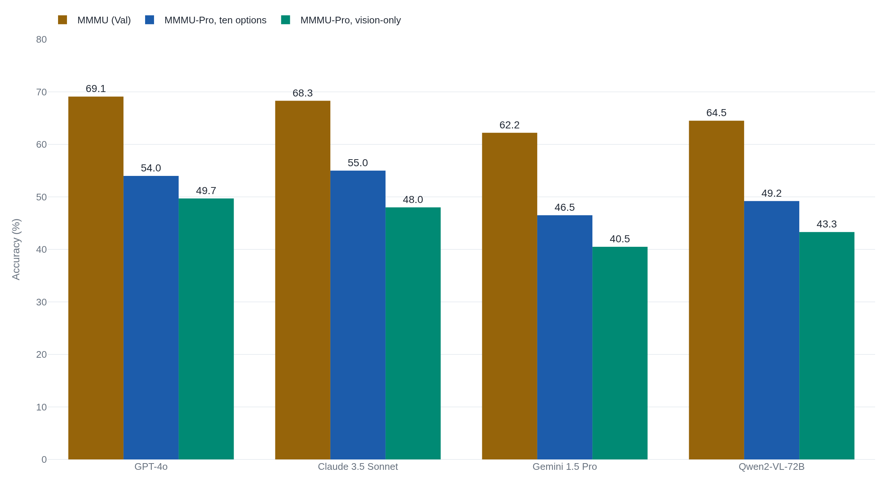

GPT-4 answers a third of MMMU with no image at all
The benchmark's own authors rebuilt it to force models to use the image, and scores fell 17 to 27 points.
Why this matters
When a new model launches, the announcement almost always prints one number for vision. It is a percentage on a benchmark called MMMU, offered as proof the model can look at a chart, a diagram, or a scan and reason about it the way an expert would. The number is real, and it measures something narrower than the billing says. By the end of this you will know what MMMU is built from and how a model's answers become the percentage. You will also see how much of the score a model wins without ever opening the image, and what happened when the benchmark's own authors rebuilt it to make the picture count.
- 01
- How a model turns a picture into words it can read: the step that happens before MMMU scores anything.
- 02
- What a multiple-choice benchmark score is really counting: MMMU borrows the same four-option format for most of its questions.
Every flagship ships an MMMU score to prove it can see
When Anthropic released Claude 3.5 Sonnet in June 2024, the announcement led with "State-of-the-art vision" and pointed to tasks like interpreting charts and graphs.1 The number behind that billing was 68.3% on MMMU, the figure Anthropic's own model card reports for the model.2
MMMU stands for Massive Multi-discipline Multimodal Understanding, a benchmark introduced by Xiang Yue and colleagues at CVPR 2024.3 Each question pairs a piece of text with an image and asks for an answer, and a model's MMMU score is the share of those questions it answers correctly. "Multimodal" is the billed word: a high score is meant to show a model can take in a picture and reason across it, not only read text.
Every flagship prints its own version. Google reports Gemini 1.5 Pro at 62.2%.4 Alibaba reports Qwen2-VL-72B at 64.5%.5 OpenAI's GPT-4o is listed at 69.1% in the follow-up study's results table.6 The numbers cluster in the sixties, and each is offered as evidence the model sees like an expert. Two things about how the test is built decide what that percentage counts: how many questions can be solved from the text alone, and what the multiple-choice format rewards.
How 11,550 exam questions become one accuracy number
MMMU is 11,550 questions.3 Yue and colleagues drew them from college exams, quizzes, and textbooks, and had annotators write new ones where a subject needed filling in.3 The questions span six disciplines: Art & Design, Business, Science, Health & Medicine, Humanities & Social Science, and Tech & Engineering. They divide into 30 subjects and 183 narrower subfields.3
The images are what make it multimodal. A question might show a bar chart, an anatomical diagram, a chemical structure, a circuit, a music score, or a medical scan. The set spans 30 image types in all, and almost every question carries one: 11,264 of the 11,550, or 97.52%.3
Most of MMMU is multiple choice. 10,861 questions, 94.03% of the set, give the model a list of options to pick from, and the remaining 689 are open-ended.3 Grading is accuracy. Each answer is right or wrong, and the score is the percentage right. Answer 615 of the 900 validation questions correctly and the score reads 68.3%. There is no partial credit and no weighting by difficulty.
Nothing in that procedure checks whether the model used the image to get there. It checks whether the final answer matches. So the natural question is how many questions a model could get right with no image at all.
A model that never sees the image still scores 34.9%
The MMMU authors ran that test themselves. They gave GPT-4 the questions as text only, with the image withheld, and scored it.3
Guessing at random on MMMU's options earns about 22.1%.3 Text-only GPT-4, reading the questions blind, scored 34.9% on the validation set, thirteen points above chance with no picture in front of it.3 The same benchmark, given to the vision version GPT-4V, scored 56.8%.3
Only one thing changed between those two runs: the image. The questions and the options stayed fixed. So the 34.9% is the part of the score a model reaches with no sight at all, and the climb to 56.8% is what the image bought, about 22 points.
That cuts two ways. A model can bank a real share of MMMU from text alone, more than a third of the questions, without seeing anything. And vision still supplies the larger part of a top score. The 22 points the image adds outweigh the thirteen a blind model wins above guessing, and a flagship's 68% sits far above the 35% ceiling text alone reaches.
An independent group measured the same effect from outside. Building a benchmark called MMStar, they found GeminiPro answered 42.9% of MMMU with no visual input. A model named Sphinx-X-MoE reached 43.6% blind, beating its own text-only language backbone by 17.9 points.7 The share of MMMU answerable without the image is not a single published figure. It is triangulated from results like these, which agree that the share is substantial.
"LLMs augmented with optical character recognition (OCR) or generated captions do not see notable improvement, indicating that MMMU necessitates deeper joint interpretation of images and text."3 Yue et al., MMMU (CVPR 2024)
The authors anticipated the objection. When they handed text-only models the image's text through OCR, or a generated caption describing the picture, the scores barely moved.3 A model that could shortcut the test with a transcript of the image would have gained from one, and these did not. The text-answerable share is real. It is a share, and the rest of the test still needs the picture.
The authors rebuilt the test to make the picture matter
In 2024 the same lead author released MMMU-Pro, a harder version built to strip out the points the original over-credited.6 It makes three changes.
First, it removes the questions a language model can already answer blind. Four open models were each run ten times on every question, and a question that at least three of the four could answer text-only was dropped.6
Second, it widens the guessing problem. MMMU gives four options, and MMMU-Pro gives ten, which in the authors' words makes it "more challenging for models to rely on guessing."6
Third, it adds a vision-only setting. The question is rendered into a screenshot, text and all, and handed to the model as a single image with no separate text to read. To answer, the model has to read the picture.6 After a round of human review trimmed the set to 1,730 questions, each appears in both a standard and a screenshot form. A model's overall MMMU-Pro score averages the ten-option standard setting and the vision-only one.6
Scores fall 17 to 27 points on MMMU-Pro
The result is the clearest measure of how much of the original number came from text and from guessing. Across models, MMMU-Pro scores landed 16.8 to 26.9 points below MMMU.6

The pattern is the same for every flagship. Claude 3.5 Sonnet reports 68.3% on MMMU and 48.0% in the vision-only setting.6 GPT-4o goes from 69.1% to 49.7%, and Gemini 1.5 Pro from 62.2% to 40.5%.6 The headline numbers sit about twenty points above what the same models score once the picture is required.
The middle bar keeps the reading honest. Even with the text-answerable questions removed and six extra distractors added, the top models still score in the low-to-mid 50s on the ten-option standard set.6 The image-independent and guessing components are a measurable slice of the original score, the slice that 16.8-to-26.9-point drop measures, and they are not the bulk of it. Qwen's report makes the same point from the other side. Raising the input image's resolution barely moved its MMMU accuracy. Its authors read that as evidence "the performance bottleneck in MMMU is more related to the model's reasoning capability rather than image resolution."5
This is where a headline MMMU score misled its readers. A launch post prints 68% or 69% next to the claim that a model reasons across expert visual material, and the number invites the reader to count all 68 points as visual reasoning. The MMMU-Pro results say otherwise. Force the model to use the image, take away the easy guesses, and roughly twenty of those points fall off. The score that remains is real, and it is lower than the billing.
There is a second way the circulating numbers can mislead, separate from vision. They are not always measured the same way. When Google introduced Gemini Ultra, it reported 62.4% on MMMU and set it beside GPT-4V's 56.8%, calling it the new state of the art.8 But the 62.4% was a Maj@32 score, the model's best answer aggregated over 32 tries, while the 56.8% came from a single attempt. Gemini Ultra's own single-attempt score was 59.4%.8 Comparing a best-of-32 number with a single-try number is not a gap in capability. It is a difference in protocol. Two MMMU percentages are comparable only when they were scored the same way.
The takeaway
MMMU measures one narrow thing well: whether a model picks the right answer to a college-level question that comes with a picture, most of the time from a menu of options. It does not measure how much of that answer came from seeing. A strong language model banks a real share of the score from text alone, more than a third of the questions with the image withheld, and the multiple-choice format pays for elimination and guessing on top of that. When the benchmark's own authors closed those gaps in MMMU-Pro, scores fell 16.8 to 26.9 points across models. So a high MMMU score is worth what it measures: a model handling expert questions that happen to carry images. It is not a reading of how well the model sees, and MMMU-Pro is what the authors built to show the difference.
- 01
- MMMU: A Massive Multi-discipline Multimodal Understanding and Reasoning Benchmark: the original paper, with the full construction and every baseline.
- 02
- MMMU-Pro: A More Robust Multi-discipline Multimodal Understanding Benchmark: the redesign and the per-model table behind this piece's chart.
Sources
- Anthropic · Introducing Claude 3.5 Sonnet
- Anthropic · Claude 3.5 Sonnet model card addendum
- Yue et al. · MMMU: A Massive Multi-discipline Multimodal Understanding and Reasoning Benchmark (CVPR 2024)
- Google DeepMind · Gemini 1.5 technical report
- Alibaba · Qwen2-VL technical report
- Yue et al. · MMMU-Pro: A More Robust Multi-discipline Multimodal Understanding Benchmark
- Chen et al. · Are We on the Right Track for Evaluating Large Vision-Language Models? (MMStar)
- Google · Gemini: A Family of Highly Capable Multimodal Models